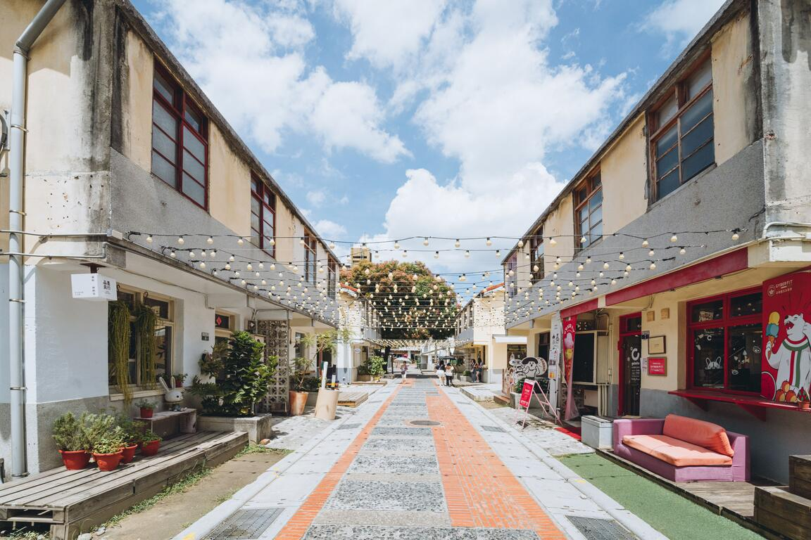
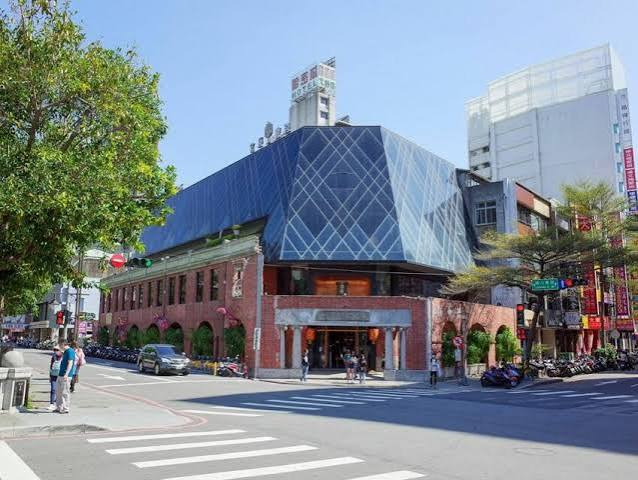
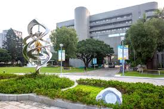

01 / CULTURE
審計新村
老建築與青年創業交織出的文創聚落。
成功將「生活、生產、生態」的精神結合。遊客可以從附近的綠園道一路漫步過來， 感受周邊豐富的藝術與人文氣息。走進村內，既能欣賞老建築的古樸韻味， 也能在各具特色的文創商店中，看見青年創業家的活力。
四個景點，從人文、歷史到自然與城市生活，一次認識台中的不同風景。

老建築與青年創業交織出的文創聚落。
成功將「生活、生產、生態」的精神結合。遊客可以從附近的綠園道一路漫步過來， 感受周邊豐富的藝術與人文氣息。走進村內，既能欣賞老建築的古樸韻味， 也能在各具特色的文創商店中，看見青年創業家的活力。

老建築重新轉化，讓歷史與現代文化創意共存。
早期是宮原武熊醫師開設的眼科診所。在「日出」經營團隊與專業建築修復人員的努力下， 耗時一年多將這座老建築重新整修，轉型為充滿活力的文化創意空間。 屋頂的透光玻璃讓室內光線自然充足，寬敞挑高的設計搭配大量的木製書架， 營造出寧靜且質樸的閱讀氣息，讓來訪的人都能感受到老房子的新生命。 這裡的伴手禮、點心與招牌冰淇淋也十分受歡迎。

從太空、生命到人類文化，探索自然與科學。
國立自然科學博物館簡稱科博館，主要展示區分為六大區塊， 包括：太空劇場、科學中心、生命科學廳、地球環境廳、人類文化廳、植物園等。
從學區發展而來的熱鬧夜間生活聚落。
逢甲觀光夜市鄰近逢甲大學、僑光技術學院等學區，夜市位於逢甲大學側門， 從文華路一直延伸到福星路，消費族群以二、三十歲的年輕人為主。 因其有著位於學區和接近市區的地緣關係，逐漸成為臺中市夜市集團的龍頭。
從審計新村的人文氣息，到宮原眼科的老建築新生命， 再走進科博館探索知識，最後在逢甲商圈感受城市夜晚。